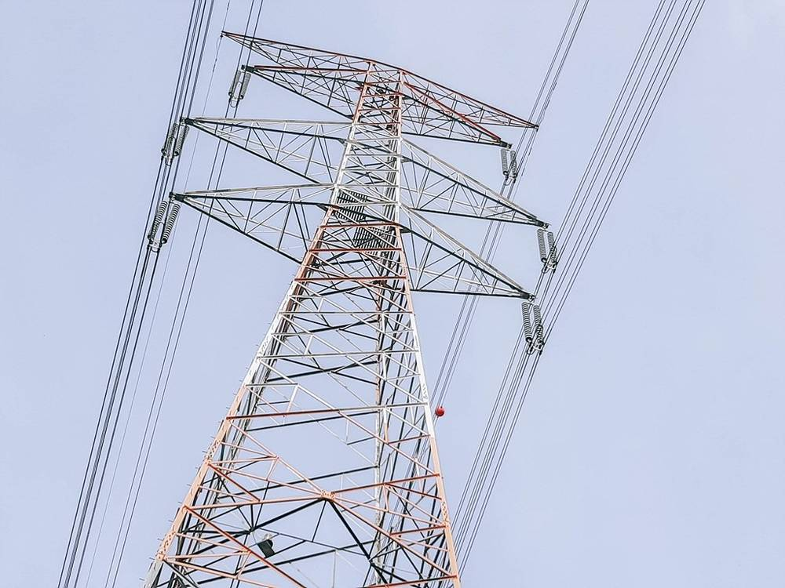

"송전탑 아래 주민도 '모두'에 들어가야"…새만금~신서산 345kV 송전선 앞둔 충남 서천·보령

약 99㎞ 초고압 선로 2034년 12월 준공 목표…사설 "노선 정하기 전에 주민을 테이블에, 마을 가까운 구간 지중화·보상 현실화"
전북 새만금에서 충남 서산 신서산변전소까지 약 99㎞에 34만5,000볼트(345kV) 초고압 송전선을 놓는 사업을 두고, 노선이 정해지기 전에 경과지 주민을 결정 과정에 참여시켜야 한다는 사설이 나왔다. 뉴스클레임은 14일 사설에서 한국전력이 2034년 12월 준공을 목표로 노선을 고르는 가운데 후보 경과지로 거론되는 충남 서천·보령 주민들이 술렁이고 있다고 짚었다.
사설은 이 선로가 서남해안에서 만든 전기를 북쪽 전력망으로 보내는 간선이지만 주민이 직접 얻는 혜택은 없고, 충남은 이미 보령·당진·태안의 석탄화력발전소로 수십 년간 수도권에 전기를 보내 온 곳이라고 지적했다. 한전이 2038년까지 송변전설비에 72조8,000억 원을 투입하는 등 전력망 확충은 피할 수 없지만, 경과지 주민에게는 땅값 하락과 전자파 불안, 공동체 단절이 남는다는 것이다.
현행 송·변전설비 주변지역 지원법은 전기요금 일부 지원과 마을 복지사업 정도에 그친다고 사설은 평가했다. 기후에너지환경부가 송전선로 주변 주민이 전력망 사업에 투자해 수익을 나누는 '계통소득' 제도 설계에 들어간 것은 옳은 방향이지만, 제도가 자리 잡기 전에 노선부터 정해지면 주민은 결과를 통보받을 뿐이라고 우려했다.
사설은 노선을 정하는 단계부터 주민을 참여시키고, 마을과 가까운 구간은 지중화를 늘리며, 보상을 실제 손실에 맞게 현실화해야 한다고 주문했다.
시민에너지 관점
덴마크는 2009~2020년 육상 풍력 사업 지분의 20% 이상을 인근 주민에게 먼저 팔도록 했고, 영국 스코틀랜드는 송전 보강 사업마다 지역 공동체 기금을 붙여 왔다. 주민이 '피해 보상 대상'에 머무르면 반대는 길어지고 공사는 늦어진다. 계통소득은 노선이 확정된 뒤의 위로금이 아니라, 노선을 정하는 테이블에서 주민이 지분과 수익 구조를 함께 설계하는 제도가 되어야 한다. 정부와 한전은 새만금~신서산 선로를 계통소득의 첫 시범 노선으로 삼아 주민 출자 몫을 처음부터 열어 두기 바란다.
출처: 뉴스클레임 2026-11-14 뉴스클레임 논설위원실(사설) 원문 보기
「送電塔の下の住民も『みんな』に入るべき」…セマングム～新瑞山345kV送電線控える忠清南道舒川・保寧
約99㎞の超高圧線路、2034年12月竣工目標…社説「ルート決定前に住民を交渉の席に、集落近くは地中化・補償の現実化を」
全羅北道セマングムから忠清南道瑞山の新瑞山変電所まで約99㎞に34万5,000ボルト（345kV）の超高圧送電線を敷く事業をめぐり、ルートが決まる前に経過地の住民を意思決定に参加させるべきだとする社説が出た。ニュースクレームは14日の社説で、韓国電力が2034年12月の竣工を目指してルートを選ぶなか、候補経過地とされる忠清南道舒川・保寧の住民に動揺が広がっていると指摘した。
社説は、この線路は西南海岸で作った電気を北側の電力網へ送る幹線だが住民が直接得る利益はなく、忠清南道はすでに保寧・唐津・泰安の石炭火力で数十年間首都圏に電気を送ってきた地域だと述べた。韓電が2038年までに送変電設備に72兆8,000億ウォンを投じるなど電力網の拡充は避けられないが、経過地の住民には地価下落や電磁波への不安、共同体の分断が残るという。
現行の送変電設備周辺地域支援法は電気料金の一部支援や集落の福祉事業程度にとどまると社説は評価した。気候エネルギー環境部が送電線周辺の住民が電力網事業に投資して収益を分け合う「系統所得」制度の設計に入ったのは正しい方向だが、制度が根付く前にルートが決まれば住民は結果を通知されるだけだと懸念した。
社説は、ルート決定の段階から住民を参加させ、集落に近い区間は地中化を増やし、補償を実際の損失に見合う水準に引き上げるべきだと求めた。
市民エネルギーの視点
デンマークは2009～2020年、陸上風力事業の持ち分の20％以上を近隣住民に先に販売するよう義務付け、英国スコットランドは送電強化事業ごとに地域共同体基金を設けてきた。住民が「被害補償の対象」にとどまれば反対は長引き、工事は遅れる。系統所得はルート確定後の見舞金ではなく、ルートを決める席で住民が持ち分と収益の仕組みを共に設計する制度であるべきだ。政府と韓電はセマングム～新瑞山線路を系統所得の最初のモデル路線とし、住民出資の枠を最初から開いておくことを望む。
出典: 뉴스클레임 2026-11-14 뉴스클레임 논설위원실(사설) 原文を読む
"输电塔下的居民也应包括在'所有人'之中"…新万金至新瑞山345kV输电线路牵动忠清南道舒川、保宁
约99公里超高压线路目标2034年12月竣工…社论：确定路线前让居民上桌，靠近村庄路段增加地下化、补偿要切合实际
围绕从全罗北道新万金到忠清南道瑞山新瑞山变电站、全长约99公里的34.5万伏（345kV）超高压输电线路，有社论呼吁在路线确定之前让沿线居民参与决策。韩国媒体News Claim 14日发表社论指出，韩国电力公社以2034年12月竣工为目标筛选路线，被列为候选途经地的忠清南道舒川和保宁居民人心惶惶。
社论指出，这条线路是把西南海岸所发电力送往北部电网的主干线，但居民得不到直接好处，而忠清南道早已通过保宁、唐津、泰安的燃煤电厂向首都圈送电数十年。韩电计划到2038年向输变电设施投入72.8万亿韩元，扩建电网不可避免，但留给沿线居民的却是地价下跌、电磁波担忧和社区割裂。
社论认为，现行《输变电设施周边地区支援法》仅限于部分电费补贴和村庄福利项目。气候能源环境部已着手设计让输电线路周边居民投资电网项目、分享收益的"电网收入"制度，方向正确，但如果制度落地前路线就已确定，居民只能被动接受结果。
社论要求从确定路线阶段起就让居民参与，靠近村庄的路段增加地下化，并按实际损失将补偿标准现实化。
市民能源视角
丹麦在2009至2020年间要求陆上风电项目把20%以上股份优先出售给周边居民，英国苏格兰则在每个输电加固项目中设立社区基金。居民若只停留在"受损补偿对象"的位置，反对就会拖长，工程也会延误。"电网收入"不应是路线确定后的慰问金，而应让居民在决定路线的桌上共同设计股份与收益结构。希望政府和韩电把新万金至新瑞山线路作为电网收入的第一条示范线，从一开始就为居民出资留出份额。
来源: 뉴스클레임 2026-11-14 뉴스클레임 논설위원실(사설) 查看原文
"Residents under transmission towers must count too": Seocheon and Boryeong brace for Saemangeum–Sinseosan 345 kV line
Roughly 99 km ultra-high-voltage line targeted for December 2034; editorial urges a seat at the table before routing, more undergrounding and realistic compensation
An editorial has called for residents along a planned 345 kV ultra-high-voltage transmission line, running about 99 km from Saemangeum in North Jeolla to the Sinseosan substation in Seosan, South Chungcheong, to be brought into decision-making before the route is fixed. In its 14 November editorial, News Claim said residents of Seocheon and Boryeong, named as possible corridors, are unsettled as Korea Electric Power Corporation (KEPCO) selects a route for completion in December 2034.
The editorial noted that the line is a trunk route carrying power generated on the southwest coast to the northern grid, yet residents gain nothing directly from it, while South Chungcheong has already sent electricity to the capital region for decades from coal plants in Boryeong, Dangjin and Taean. Grid expansion is unavoidable — KEPCO plans to invest 72.8 trillion won in transmission and substation facilities by 2038 — but residents along the corridor are left with falling land prices, worries about electromagnetic fields and divided communities.
The current act supporting areas around transmission and substation facilities offers little more than partial electricity bill support and village welfare projects, the editorial said. It welcomed the Ministry of Climate, Energy and Environment's work on a "grid income" scheme letting residents near lines invest in grid projects and share returns, but warned that if routes are decided before the scheme takes root, residents will simply be told the outcome.
The editorial urged that residents be involved from the routing stage, that undergrounding be expanded near villages, and that compensation be raised to match actual losses.
Citizen Energy View
From 2009 to 2020 Denmark required onshore wind projects to offer at least 20% of their shares to nearby residents first, and Scotland has attached community funds to its transmission reinforcement projects. When residents are treated only as recipients of damage compensation, opposition drags on and construction slips. Grid income should not be a consolation payment after the route is settled; residents should help design ownership and revenue at the table where the route is chosen. The government and KEPCO should make the Saemangeum–Sinseosan line the first pilot route for grid income and open a share for resident investment from day one.
Source: 뉴스클레임 2026-11-14 뉴스클레임 논설위원실(사설) Read the original